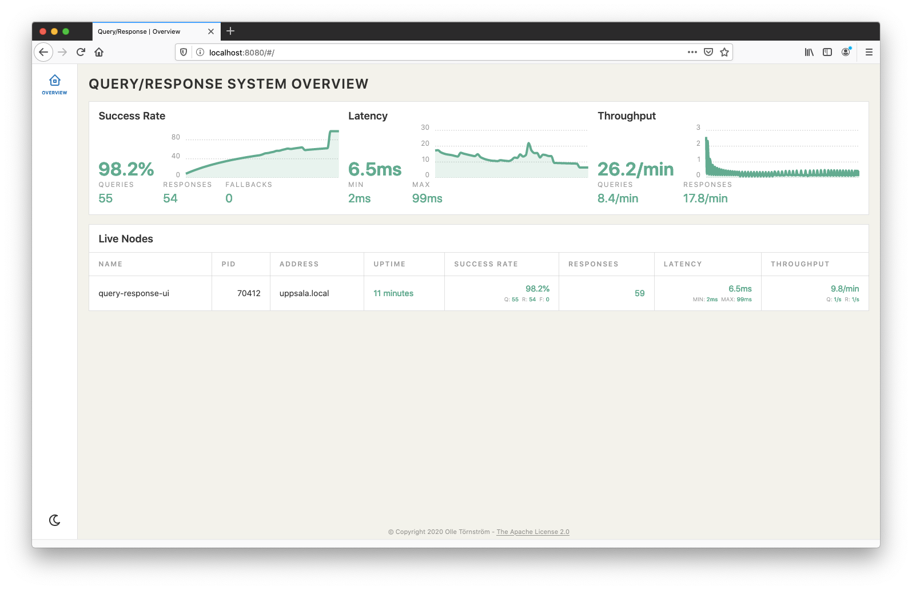
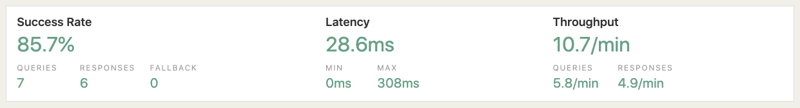
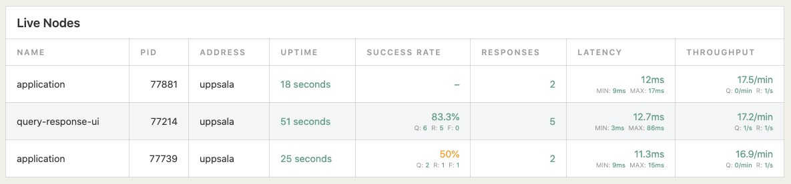

1. Foreword
Sometime around 2015 I came across a presentation with Fred George, about the Challenges in Implementing Microservices. It’s a great talk, with lots of good and relevant information. Experience comes from learning through failures, and at this point in time I had just learned a hard lesson about the problems with distributed services and blocking API calls. I had seen how latencies would go up and availability go down the drain, as calls from service A to B were actually depending on service B calling service C, calling service D. It was a mess.
In his talk George lands at the question "Synchronous or Asynchronous?" and proceeds to describe, what he calls, the "Needs Pattern". Service A would, instead of calling service B, publish a query, and service B would listen for it and send back a response. After hearing this I began to think a lot about the effects of moving to asynchronous communication between services. There was clearly a lot more there than just decoupling. Something more fundamental.
The Query/Response pattern, that I arrived at, challenges developers to really think hard about the responsibilities and autonomy of services. It provides very few guarantees, which will force decisions around resilience and availability at a much earlier stage in the design and development process. It literally turns things around - an inversion of responsibility - which I truly believe we can benefit from.
2. About This Document
This document is intended to work as a comprehensive reference for developers.
It provides an introduction to the technical prerequisites, and how to get
started. There is a deep-dive into the QueryBuilder and ResponseBuilder,
which is aimed at describing their capabilities. We present the Monitoring UI
and describe its features and benefits.
|
Tip
|
Towards the end of this document we’ve added an introduction and explanation of The Query/Response Protocol. For readers new to Query/Response we advice to go ahead and read that first. |
3. Getting Started
Query/Response for Spring AMQP makes it really easy to extend Spring Boot stand-alone, production-grade applications, that are using Spring AMQP. We have taken a working pattern for building highly decoupled evolving service architectures, and wrapped it in a developer friendly library.
3.1. System Requirements
Query/Response for Spring AMQP 0.0.0-SNAPSHOT requires at least Spring Boot 2.x and Java 11, and should work for later releases too. We are building and running it successfully with Java 17 and the Spring Boot 3.0.3 version.
3.2. Installation & Configuration
It is distributed as a Maven dependency, and is known to work well with Maven 3.3+. Using the dependency with Gradle should work too. Please see the Quickstart information, available on the project Github page, for information on how to get the Maven dependency.
Enabling Query/Response for Spring AMQP is done by loading the QueryResponseConfiguration
class. The most simple way to do this, is by annotating your Spring Boot
application with the @EnableQueryResponse annotation.
@SpringBootApplication
@EnableQueryResponse
public class MyApp {
public static void main(String[] args) {
SpringApplication.run(MyApp.class, args);
}
}|
Note
|
This annotation will do nothing more but to import the
QueryResponseConfiguration class.
|
That’s it! There is no more infrastructure code, wiring or setup that needs to be done. It’s just that easy.
3.2.1. Connecting to an AMQP broker
Before you can run your application you need to make sure there is an AMQP
broker available. By default Spring AMQP tries to connect to a
RabbitMQ, running locally on port 5672.
Start an and run RabbitMQ using docker:
$ docker run -p 5672:5672 -p 15672:15672 rabbitmq:3-management
|
Note
|
The 3-management tag will enable the RabbitMQ Management UI. When the
broker is running, it can be accessed at localhost:15672 with
username and password guest.
|
Now running your application, will enable Query/Response for Spring AMQP, connect to the broker and create all the resources necessary on the broker.
$ mvn spring-boot:run
Now is a good time to use the RabbitMQ Management UI, available at localhost:15672, to inspect the exchange, queues and bindings created by Query/Response for Spring AMQP by default.
3.3. Queries
Publishing queries is a way for your application to ask for information that it may need in order to accomplish tasks. Queries express a need, and are not addressed to any specific service or component.
Query/Response for Spring AMQP makes it really really easy, to create and publish a query using
the QueryBuilder.
@Component
public class Queries {
@Autowired
QueryBuilder queryBuilder;
@Order(2)
@EventListener(ApplicationReadyEvent.class)
public void query() {
Collection<String> polos =
queryBuilder.queryFor("marco", String.class) // (1)
.waitingFor(1000L) // (2)
.orEmpty(); // (3)
polos.stream().map("marco? "::concat).forEach(System.out::println);
}
}-
Initiates a query for the term
marco, with any results being consumed as, or mapped to, the typeString.class. Returned results are always gathered in a collection. Either none, one or many elements may be returned. -
Queries require a timeout, here we set it to
1000Lmilliseconds. This means that this specific query will always block for 1 second. -
The query may not receive any responses, so it always needs to specify how that case should be handled. Default here is an empty collection, of the declared return type
String.class.
Hopefully this shows, how concise and powerful the QueryBuilder is, dealing
with results mapping, fault tolerance and default values in just a couple of
lines of code.
If you run the application now, it will publish a query to the message broker, which we can see in the logs.
$ mvn spring-boot:run
...
c.s.queryresponse.RabbitFacade : |<-- Published query: marco - (Body:'{}' MessageProperties [headers={x-qr-published=1589642002076}, replyTo=94f0fff4-c4f3-4491-831d-00809edb6f95, contentType=application/json, contentLength=2, deliveryMode=NON_PERSISTENT, priority=0, deliveryTag=0])
At the moment there are no responses to be consumed, so after blocking for 1
second, nothing is printed STDOUT.
3.4. Responses
Building services, medium, large or micro (who cares), that publish
responses to queries is also really easy with Query/Response for Spring AMQP, using the
ResponseBuilder.
@Component
public class Responses {
@Autowired
ResponseBuilder responseBuilder;
@Order(1)
@EventListener(ApplicationReadyEvent.class)
public void response() {
responseBuilder.respondTo("marco", String.class) // (1)
.withAll() // (2)
.from("polo", "yolo"); // (3)
}
}-
Initializes a response to queries for
marco, providing the type-hint on how to map entries in the response. Set toString.classhere. -
The response
withAll()will publish all elements in one single response. -
And finally this response is provided the elements
"polo", "yolo"as the actual data to publish. The builder varags method, used here, is mostly for trying out Query/Response for Spring AMQP, or for static responses.
Again, the builder makes it really easy to create a responding service, without any special setup or complicated configurations.
Now if you run the application again, with the response component registered before the query publisher, it will publish the response.
$ mvn spring-boot:run
...
c.s.queryresponse.RabbitFacade : |<-- Published query: marco - (Body:'{}' MessageProperties [headers={x-qr-published=1589642489894}, replyTo=c77a8a1d-c959-4f2a-bd51-85b7e6b5b69b, contentType=application/json, contentLength=2, deliveryMode=NON_PERSISTENT, priority=0, deliveryTag=0])
c.s.queryresponse.Response : |--> Consumed query: marco
c.s.queryresponse.RabbitFacade : |<-- Published response: c77a8a1d-c959-4f2a-bd51-85b7e6b5b69b - (Body:'{"elements":["polo","yolo"]}' MessageProperties [headers={x-qr-published=1589642489941}, contentType=application/json, contentEncoding=UTF-8, contentLength=28, deliveryMode=NON_PERSISTENT, priority=0, deliveryTag=0])
c.s.queryresponse.Query : |--> Received response message: MessageProperties [headers={x-qr-published=1589642489941}, contentType=application/json, contentEncoding=UTF-8, contentLength=0, receivedDeliveryMode=NON_PERSISTENT, priority=0, redelivered=false, receivedExchange=, receivedRoutingKey=c77a8a1d-c959-4f2a-bd51-85b7e6b5b69b, deliveryTag=1, consumerTag=amq.ctag-Q_ghWp4TWU9EYhi_rqErcg, consumerQueue=c77a8a1d-c959-4f2a-bd51-85b7e6b5b69b]
marco? polo
marco? yolo
Now you can see a full roundtrip of the query being published and consumed,
and the response being published and also consumed. And the finished output
is "polo" and "yolo" printed on STDOUT.
|
Note
|
We are using the @Order annotation in our example only to ensure that
responses are built and registered before queries, when they are built
in one and the same app.
|
4. Developers Reference
4.1. Overview
The goal of Query/Response for Spring AMQP is to provide developers with tools that are easy to use and understand. We believe that a procedural and imperative style of writing programs, or thinking about tasks in programs, is broadly understood and valuable model. With Query/Response for Spring AMQP we try to support this, rather than introducing any new concepts for streams, futures or promises.
With Query/Response for Spring AMQP developers should feel enabled to write code in a normal way. However, it is our mission to raise awareness of things that are hard to consider, when building distributed systems. The tools try to convey these considerations, by making them transparent and part of the API.
In the next couple of sections we’ll look closer at the QueryBuilder and the
ResponseBuilder types. We’ll discuss how to use them in detail, and try to
explain the concepts behind them, and the intention of their implementation.
4.2. QueryBuilder
The QueryBuilder class is a central point of entry, and provides a fluent
builder-API, for publishing queries. It’s provided as a bean, by enabling
Query/Response for Spring AMQP, using the @EnableQueryResponse annotation. It may be injected
as a dependency to provide access from methods in any Spring component.
We recommend injecting it via the component constructor, and keeping it as a
private field. The findAuthors() method below, shows how to access the
queryBuilder field in order to publish a query.
@Component
public class Authors {
private final QueryBuilder queryBuilder;
public Authors(QueryBuilder queryBuilder) {
this.queryBuilder = queryBuilder;
}
public Collection<String> findAuthors() {
return queryBuilder.queryFor("authors", String.class)
.waitingFor(800)
.orEmpty();
}
}In the example above, the published query is defined by the string term
"authors". This is how the most basic contract of Query/Response is defined. Any
string or text term may be published as a query.
The second argument is the expected type of any received response elements. It
is not published with the query, but rather used to coerce or interpret any
received responses. This means that regardless of the payload of any response,
in this case Query/Response for Spring AMQP will attempt to read the response elements as the
declared type String.class.
Queries are built and published using the queryFor(..) initial method.
Any following call to one of the terminal methods orEmpty(),
orDefaults(..) and orThrows(..) will build and execute the query, and block
on the calling thread.
Since the call above to orEmpty() blocks the thread, users have to specify
one or more query conditionals. In the example above, the call to
waitingFor(..) defines that the call will block for around 800 milliseconds.
Constructing queries with the QueryBuilder revolves around creating a
composition of initial, conditional, maybe an optional informal and
exactly one terminal method call. In the table below is a short review of the
different builder methods and their types.
| Method | Type | Description |
|---|---|---|
|
initial |
Creates a new builder for a query |
|
conditional |
Specifies the waiting/blocking condition |
|
conditional |
Sets a limit condition, a maximum |
|
conditional |
Sets a limit condition, a minimum |
|
terminal |
Terminates with empty, after conditionals are evaluated |
|
terminal |
Terminates with some defaults, after conditionals are evaluated |
|
terminal |
Terminates by throwing, after conditionals are evaluated |
|
informal |
Allows for explicit logging etc. |
Let’s take a closer look at each of the builder method types.
4.2.1. Initial methods
At the moment there’s only one initial method and it’s declared as:
public <T> ChainingQueryBuilder<T> queryFor(String term, Class<T> type)So we can query for any String term and given the expected mapped or
coerced type as a Class<T>. The returned ChainingQueryBuilder<T>
provides the capabilities of the fluid API.
4.2.2. Conditional methods
All conditional properties can be composed together by the QueryResponse
builder API, to define whether a query is successful or not. If an executing
query is completed in a successful way, fulfilling the conditionals, it will
return and not consume any more responses.
-
waitingFor(..)- defines a timeout conditional. The built query will evaluate as successful if any responses were consumed after the (approximate) given time limit has elapsed. There are a few different methods declared, to specify the timeout:-
waitingFor(long millis) -
waitingFor(long amount, TemporalUnit timeUnit) -
waitingFor(Duration duration)
-
-
takingAtMost(int atMost)- defines a limiting conditional on the aggregated number of received elements. The built query evaluates to successful, and returns, when the given amount is reached. -
takingAtLeast(int atLeast)- defines a minimum conditional on the number of received element. The built query evaluates to successful, only if at least the given number of elements can be consumed.
4.2.3. Terminal methods
Only one terminal method can be invoked on the builder, per query. It will
ensure that the query is built and executed. All terminal methods are
declared to return Collection<T> where the type parameter <T> is given
in the initial method type parameter.
-
orEmpty()- defines the query to return an emptyCollectionin case the conditionals do not evaluate to successful. -
orDefaults(..)- defines the query to return with some provided defaults in case the conditionals do not evaluate to successful. There are a couple different methods declared for defaults:-
orDefaults(Collection<T> defaults)- set at build-time. -
orDefaults(Supplier<Collection<T>> defaults)- supplied at run-time.
-
-
orThrow(..)- defines the query to throw an exception in case the conditionals do not evaluate to successful.
4.2.4. Informal methods
Currently there’s only one informal builder method, allowing for extended logging or information capture, in case the query fails or an exception is thrown.
public ChainingQueryBuilder<T> onError(Consumer<Throwable> handler)|
Tip
|
Try to think more about how the QueryBuilder API covers the exceptional
query-cases, as part of the composition of conditionals. If clients try
to use terminals that provide sensible defaults, it may not be necessary
to build other types of complex recovery or retries.
|
4.2.5. QueryBuilder examples
Below are some examples of how the different QueryBuilder API methods can be
combined.
Using takingAtMost(..), combined with waitingFor(..), system resources may
be preserved and the client can be protected from consuming too much data.
return queryBuilder.queryFor("authors", String.class)
.takingAtMost(10)
.waitingFor(800)
.orDefaults(Authors.defaults());It is possible to express constraints at the integration point, also when using Query/Response for Spring AMQP, throwing on an unfulfilled query, as an option to more lenient handling with defaults.
return queryBuilder.queryFor("offers/rental", Offer.class)
.takingAtLeast(10)
.takingAtMost(20)
.waitingFor(2, ChronoUnit.SECONDS)
.orThrow(TooFewOffersConstraintException::new);The informal builder feature, allows for transparency into queries that may have to be observed.
return queryBuilder.queryFor("offers/rental", NewOffer.class)
.takingAtLeast(3)
.waitingFor(400)
.onError(error -> LOG.error("Failure!", error))
.orThrow(TooFewOffersConstraintException::new);4.3. ResponseBuilder
Another entry-point into Query/Response for Spring AMQP is the ResponseBuilder. It provides a
fluid builder-API that allows users to create responding services or components.
It is also provided as a bean, when using the @EnableQueryResponse annotation
in a Spring application. It can easily be injected as a dependency to provide
access from methods in Spring components.
The respondWithAuthors() method below, shows how the injected builder is used
to create a responding service. It is invoked by the Spring application context,
on the ApplicationReadyEvent event.
@Component
public class OnlyThreeAuthors {
private final ResponseBuilder responseBuilder;
public OnlyThreeAuthors(ResponseBuilder responseBuilder) {
this.responseBuilder = responseBuilder;
}
@EventListener(ApplicationReadyEvent.class)
public void respondWithAuthors() {
responseBuilder.respondTo("authors", String.class)
.withAll()
.from("Tolkien", "Lewis", "Rowling");
}
}In the example above the responding service is defined by calling the builder
method respondTo(..) with the query term parameter "authors". It will
be bound to publish the given 3 authors as String.class entries, whenever it
consumes a query for the matching string term "authors".
This is the most basic premiss of Query/Response, that any string or text term may be interpreted as a query - it is however up to the response publisher to determine what the query means.
|
Tip
|
We’ve tried to provide information around the Query/Response protocol and philosophy in the later chapter on The Query/Response Protocol. Go there to find out more. |
The second parameter is the the type of each element, that will be published in
the response. It is given both as a type hint for the compiler, as well as a
parameter to the data mapper. Here it’s trivial, the three authors are given as
String.class entries.
|
Note
|
The data mapper mentioned above, is in fact the
com.fasterxml.jackson.databind.ObjectMapper and Query/Response for Spring AMQP currently uses
JSON as the transport format. This means that type hints, JSON mapping
configuration annotations or custom mappings will apply. However as data
mapping on the consumer side is done by coercion, the published format
must conform to some agreed upon standard, shape or protocol.
|
Response publishers are built using the respondTo(..) initial method. Any
following call to one of the terminal methods from(..) or suppliedBy(..)
will create and register it, as its own consumer in another thread. The
builder call returns immediately.
The ResponseBuilder comes with some methods to allow for partitioning or
batching, which can be used to control the transfer of data to some degree.
The table below shows a summary of the builder methods and types.
| Method | Type | Description |
|---|---|---|
|
initial |
Creates a new builder for a query |
|
batching |
Specifies NO batches |
|
batching |
Sets the batch size of responses |
|
terminal |
Terminates with some given response data |
|
terminal |
Terminates with some supplied response data |
Let’s take a closer look at each of the builder method types.
4.3.1. Initial methods
At the moment there’s only one initial method for building responses. It is declared as:
public <T> ChainingResponseBuilder<T> respondTo(String term, Class<T> type)So we can create a response for any String term and declare that we intend
to publish elements of some type given as a Class<T>. The returned
ChainingResponseBuilder<T> provides the capabilities of the fluid API.
4.3.2. Batching methods
Control over how response elements are published can be made by using the batching methods that the builder provides.
-
withAll()- defines that no batching should be used, and will publish all given elements, or try to drain a suppliedIteratorall at once. -
withBatchesOf(int size)- defines a batch size, which the response publisher will use, to create a series of response messages, with up-to the givensizeof elements.
4.3.3. Terminal methods
Only one terminal method can be called on the builder, per response. It will ensure that a responder is created and added as a query-consumer, a subscriber to the query term as a topic. It is not attached to the calling thread, so the builder call always returns after the terminal call.
-
from(..)- declares the source for the provided response data elements. It is declared in a few different ways, for alternative use:-
from(T… elements)- vararg elements -
from(Collection<T> elements)- provided collection at build-time -
from(Supplier<Iterator<T>> elements)- supplied iterator at build-time
-
-
suppliedBy(Supplier<Collection<T>> elements)- declares that response data is supplied at run-time.
4.3.4. ResponseBuilder examples
Batch responses provide developers with more options to tune and throttle a system using Query/Response across many services. It may tune and change the profile of resource use, in a network.
responseBuilder.respondTo("offers/monday", Offer.class)
.withBatchesOf(20)
.from(offers.findAllOffersByDayOfWeek(Calendar.MONDAY));Dynamic responses are easy to build, with an API that suits modern Java, using lazy calls to suppliers of data.
responseBuilder.respondTo("users/current", Token.class)
.withBatchesOf(128)
.suppliedBy(userTokenService::findAllCurrentUserTokens);5. Monitoring UI
Query/Response for Spring AMQP is intended to be used in a landscape of distributed and highly decoupled services that exchange information and data. Being able to monitor and observe them is very important. We provide a monitoring and administration user interface for this purpose.
The latest built version of the Query/Response Monitoring UI can be downloaded as a fat-jar from https://github.com/olle/query-response-spring-amqp/raw/main/ui/query-response-ui.jar. To start Query/Response Monitoring UI simply run:
$ java -jar query-response-ui.jar
5.1. Overview
The Query/Response Monitoring UI connects to the RabbitMQ broker and listens to metrics and monitoring information about the live nodes in the current system setup. It is available at localhost:8080.

The Query/Response Monitoring UI also provides a simple query-response command line interface, where users can publish queries and see responses. Since this features is effectively us eating our own dog food we get a very nice effect, where the Query/Response Monitoring UI instance is self-visualizing - it shows up as a live-node in the overview.
5.1.1. Three Golden Metrics
The Query/Response Monitoring UI lets us learn about the currently running system. The top most part provides a few base metrics - our initial golden three: success rate, latency and throughput.

| Name | Type | Description |
|---|---|---|
Success Rate (SR) |
|
The rate of successful queries performed. A query is successful if it returns results, which means any predicates, limits or timeouts are also successfully evaluated. |
SR Queries |
|
The current known count of published queries. |
SR Responses |
|
The current known count of consumed responses. |
SR Fallbacks |
|
The current known count of executed fallbacks. |
Latency (L) |
|
The average measured time for either a query or a response to be published, and then consumed. The transport duration. |
L Min |
|
The current measured shortest, non zero, latency duration. |
L Max |
|
The current measured longest latency duration. |
Throughput (TP) |
|
The current measured query and response message publishing rate. Measured over a fixed sample size window. |
TP Queries |
|
The current measured message publishing rate, for queries. |
TP Responses |
|
The current measured message publishing rate, for responses. |
5.1.2. Live Nodes
The second section shows some information about the current live nodes, which means any clients using Query/Response for Spring AMQP, that are currently up and running.

| Column | Description |
|---|---|
Name |
The Spring Boot app name, or |
Pid |
The |
Address |
Host name or IP address, or |
Uptime |
The app uptime, or |
Success Rate |
Rate of successful queries (SR), or |
Responses |
Number of published responses (including statistics for the Query/Response Monitoring UI). |
Latency |
Measured latency for queries and responses, the transport duration (L). |
Throughput |
Publishing rate for queries and responses (TP). |
6. The Query/Response Protocol
A messaging pattern for building highly decoupled evolving service architectures.
6.1. A simple example
Let’s learn about the Query/Response pattern by walking through a small fictional example (no pun intended). The technical context is messaging and hints at some type of broker-based setup - in theory though, any asynchronous communication could be used. The examples are only pseudo-code and plain-text data, to keep things simple.
6.1.1. Any good sci-fi books out there?
Let’s publish a query.
query: books.sci-fi reply-to: library/books.sci-fi#42
The structure above captures all the basic components that a query should
communicate. The term books.sci-fi expresses the published need, and we
can easily understand that it’s a request for science fiction books.
The dot-notation is not at all required, the query can use any syntax that fits the platform or programming language.
The query has an address where responses should be sent back to:
library/books.sci-fi#42. This is really important, not only in order to
receive responses, but also to avoid coupling the sender to the query. We
don’t need to state who’s publishing the query. The reply-to is just an
address, a location or mailbox that can be used for replies.
The address is only for this particular query, and it is made to be unique.
In this example library/books.sci-fi#42 describes a topic library, and
then the unique mailbox or queue for the query with a hash-code
books.sci-fi#42.
6.1.2. The current top-3 books
response: library/books.sci-fi#42 body: "Neuromancer" "Snow Crash" "I, Robot"
We’re in luck. We got a response! The information above represents a response to the query we published. It’s sent to the address from the query, and carries a body or payload of information which may be of interest to us.
The response does not have to say who it’s from. This allows us to think about exchange of information, without the notion of: "A sends a request to B, which responds to A". We are making sure that the services are decoupled from each other, by letting the response be an optional message, sent to the address instead of a reply to the sender. More about this later.
6.1.3. The Asimov collection
Since our query was published as a notification, we’re not bound to a single reply. We can keep on consuming any number of responses that are sent to the address we published.
response: library/books.sci-fi#42 body: "I, Robot" "The Gods Themselves" "Pebble in the Sky"
In this response we received a list of book titles which all have the same author. The previous was a list with popular books. This reply even has one entry which was already in the first response we received.
This is of course not a problem, and it shows us a couple of important things. Responses may come from different sources and contexts. This means that the consumer of a response will have to assert the value or usefulness of the received information, and decide how to handle it.
The structure of a response should of course conform to some common, agreed upon, format or data-shape. More on this later.
Considering all this, we need to remember Postel’s Law. Information should be liberally handled (interpreted), but publishing should be done more conservatively. As a consumer of responses we just can’t have a guarantee that the information received is valid, well formed or not malicious. We have to consume, convert and validate with great care. The decoupling in the Query/Response patter has a price, and this is one part of it.
But is a published REST-endpoint, for POST requests, that much better? I would argue that we still have the same requirements. To be able to handle requests liberally, we have to convert and validate, with great care. But we are coupling the client and server to each other and, what is perhaps even worse, we’re actually allowing the client to control the writing of information inside the server. We have at least surrendered to that model of thinking. The POST is a write operation!
To really think and reason about who’s controlling the write operation, can be a very powerful concept in my view. And arguably, the further away we can push this authority from the actual, internal act of writing, the less we need to think about the complexity of both collaborators at once. This is of course the essence of messaging. We could still achieve this with the REST endpoint, but I would say that it is a lot harder to avoid thinking about the effect of the returned response from the POST request. Even if it is empty. We are caught in a lock-step or imperative model.
6.1.4. No book lovers out there?
Let’s rewind the scenario a bit. Let’s say we’ve just published the query, but no responses arrive. What should we do?
This is not a flaw in the design, but a specific part of the Query/Response pattern. It is always up to the consumer of responses (the one that sent the query), to decide how long it will continue to read, or wait for any to arrive at all. The pattern does not force this or make any promises.
There might be responses. There may be none, a single one or a huge amount. This is by design, and it forces us to think about important questions, early in development. Fallback values, proper defaults, circuit-breakers and how to deal with a flood of responses.
The most commonly asked question, by developers new to the Query/Response pattern, is: "But what if there are no responses, what do I show the user?". Exactly! Plan for that. This is something that should be considered early in design and development. There might very well be a response, eventually, but how long do you let the user wait for a result?
6.1.5. Reprise, surprise
Back to our original scenario. We’ve received both the top-3, as well as a collection of Asimov books. And we’re still open for more responses to the published address.
response: library/books.sci-fi#42 body: "Neuromancer" "Snow Crash" "I, Robot"
Hey, what’s this! We now received the same response and body payload, as before. This is still not a problem, and it’s not a flaw in the pattern. It is not possible to avoid multiple responses, even from the same publisher. As a consumer, we have to be ready to handle it. There is nothing wrong with this response at all.
The consumer must handle this, and can’t keep the entries in a simple list. If we did, it would contain several duplicate entries. It would be enough to use a set instead, so any duplicate entries would only be kept once.
6.1.6. So, what’s in the library?
Let’s see what we have.
query: library.sci-fi reply-to: bookshelf/library.sci-fi#1337
A new query is published and we understand the query term to mean that
there’s an interest in knowing what books are in the library. A successful
scenario could arrive at the following response being consumed.
response: bookshelf/library.sci-fi#1337 body: "Neuromancer" "Snow Crash" "I, Robot" "The Gods Themselves" "Pebble in the Sky"
Just as expected.
6.1.7. Inversion of flow
What we’ve seen in this example scenario is actually an inversion of what could have been implemented as a tightly coupled, chained set of synchronous service calls:
A user whishes to view a list of science fiction books through the
Bookshelfservice, which needs to call theLibraryfor the list. TheLibraryservice aggregates all sci-fi books by calls to 2 configured services:Top-3andAuthors. Only after both service calls return, can theLibraryrespond to theBookshelfand the user is presented with a list of sci-fi books.
In this type of system, not only are the calls aggregated in the total time, effectively forcing the user to wait until all calls return, but also to the availability of each service. This accumulates at the point of the user, making it highly probable that viewing the list of books will fail.
There are many ways to work towards better and more resilient solutions, also in the synchronous solution. I’m not trying to say that it is the wrong model. The point I’m trying to make, is the very different way of thinking that the Query/Response pattern forces us into from the start. Availability, fallbacks, resilience and strict timeouts are called out as key-concepts.
I hope this illustrates what’s possible using this approach and that I’ve sparked at least som interest in the Query/Response pattern. Later I will extend on some of the features and caveats.
6.2. Specification
I’d like to describe the Query/Response pattern in a more formal but not too strict way, since it’s not in any way some type of standard or protocol. This is a pattern derived from the general idea of expressing a need or demand, as previously told. It is shaped here, into a specific version, or flavour, in the Query/Response pattern. It simply contains my recommendations and suggestions on rules or principles to follow.
Please, take what you like, leave the rest, and extend as you seem fit.
Use of the keywords: "MUST", "MUST NOT", "REQUIRED", "SHALL", "SHALL NOT", "SHOULD", "SHOULD NOT", "RECOMMENDED", "MAY", and "OPTIONAL" are intended to follow the definitions of RFC 2119.
6.2.1. Intent
The Query/Response pattern aims to describe a model for information sharing in a distributed system. It does so by using strong decoupling of system actors and establishing asynchronous message-based high-level data exchange, as the only means of communication.
The following specifications tries to provide a set of rules and guides, which can be used as an authoritative source for developer, implementing the pattern.
6.2.2. Components and Collaborators
| Name | Type | Description |
|---|---|---|
|
message |
Very small, published notification. |
|
message |
Carries information as payload. |
|
location |
Reference to "a mailbox" |
|
actor |
Initiates publish method calls. |
|
actor |
Accepts consume method calls. |
Query
A notification that expresses a specific need or whish, which can be fulfilled by a response, published to a specified return address. The query MUST state its need or whish in an interpretable way. It may use any suitable syntax, semantics or language. Most commonly a simple string or term is used, similar to a message subject, -name or an event routing-key. A query MUST specify an address for responses, which SHOULD be appropriate for the stated query and, technically available, as the query is created.
I very much recommend creating queries with expressions or terms from a domain specific, or ubiquitous language. This allows for broader understanding and involvement of stakeholders. Keeping queries human readable makes sense. It’s often desirable to use structured terms, with semantics, such as filters or parameters. This is quite common and not at all bad.
Response
A notification, published, as a response to a query, optionally carrying an information- or data-payload. A response MUST NOT be sent without an intent to answer a specific query (use event notifications for that). The response MUST be sent to the address of the query it responds to, without manipulating it. A response SHOULD carry an appropriate information- or data-payload, with the intent to answer the query it responds to. Note that this is not a strict requirement. Responses SHOULD be sent within an appropriate time frame of seeing a query.
In most cases it’s desirable to publish a response as quick as possible, after consuming a query.
Address
Describes and designates an addressable location with the capability to receive and handle responses. Typically a messaging mailbox or a queue. The address MUST NOT describe a system actor or collaborator, but instead ensure decoupling between a publisher and a consumer.
In messaging or broker based systems, the address is typically a routing key, topic or a queue-name.
Publisher
An actor that initiates the publishing of a notification, either a query or a response depending on its current role. The publisher MUST NOT be responsible for the arrival of any published information. Publishers MUST NOT know any consumers.
|
Note
|
The concrete interpolated roles Query-Publisher and
Response-Publisher, does not have to be bound to a single or unique actor.
|
It is open for the implementation of the Query/Response pattern to solve or choose how it ensures delivery of messages, e.g. using a broker- or queue- based messaging system or some other solution for asynchronous communication.
Consumer
An actor that willingly yields to the consumption of notifications, from some external source, either a response or a query depending on its current role. Consumers MUST NOT know any publishers.
|
Note
|
The concrete interpolated roles Query-Consumer and
Response-Consumer, does not have to be bound to a single or unique actor.
|
6.2.3. Methods and Actions
Nothing in the Query/Response pattern is synchronous, or based on the notion of guaranteed delivery (or only-once semantics). The following structured step-by-step description is only for documentation purposes, and does not, in any way, define a sequence which can be relied upon.
Prepare Address
Before publishing a query, the query publisher SHOULD ensure that an appropriate address, specified for the query, can be handled.
Implementations are free to use a best-effort approach. It may be that the only option is to use short-lived or temporary resources, which may or may not fail to be allocated. Therefore there’s no strict requirement to ensure that the address can be handled.
Publish Query
The query publisher can, at any time, choose to publish a query. No ACK or NACK will be provided and the query publisher MUST NOT assume that the query has been consumed, or that a response will be returned at this time. The publisher SHOULD consider the case where the query is lost, examine options to detect and repair this, if possible; timeouts, retries or fallbacks are perhaps options to investigate.
Consume Query
A query consumer, that is willingly listening for queries, may at any time receive, and choose to handle a query. Consuming queries is an unbound operation. The consumer SHOULD handle queries with an intent to provide a response, or ignore the query. A consumer MAY decide to publish none, one or any number of responses to the query - it is optional. A consumer MAY at any time choose to stop listening for queries.
Please note that the Query/Response pattern does not protect against query consumers with harmful intent. Implementations should consider issues like security, encryption and trust as extensions to it.
Publish Response
A response publisher MUST use the provided address of the query it responds to, when publishing responses. No ACK or NACK will be provided and the publisher MUST NOT assume that the response has been delivered, arrived properly or consumed.
Consume Response
A response consumer, listening for responses at a previously created address, MAY at any time receive one or several responses - or not at all. Consuming responses is an unbounded operation. Any received response MAY have a payload or body of information. The consumer SHOULD assert and validate any transferred information with great care. A consumer MAY at any time choose to stop listening for responses.
6.3. The example revisited
Let’s examine one of the most powerful aspects of using the Query/Response pattern. If we think back to our initial example we published a query for books in the sci-fi genre.
query: books.sci-fi reply-to: library/books.sci-fi#42
We also learned that responses may come from different sources, with different payloads and we are responsible for dealing with validation and duplicates etc.
The query in this example uses only some minimal semantics to express the
genre of books requested, the term sci-fi. This is part of a contract from
our domain, together with rules on how any result payload should be presented.
The list of strings within quotes are not by accident, it is also by design.
The Query/Response pattern does not enforce any structural rules for query, address or response syntax. This must come from designers and developers. I would suggest, using Domain Driven Design to leverage the power of a ubiquitous language in the queries.
All this together puts us in a position to allow change and evolution in our system.
6.3.1. A better library protocol
We have agreed on supporting stars for book ratings, and different teams scramble to their stations to extend for the new feature.
We saw earlier that data returned was formed as a list of quoted strings, and the contract for parsing was: "first quoted string per line is book title".
body: "Neuromancer"
That rule and the capability to extend it, made it possible to agree on a new optional format: "trailing key-values are properties". For example:
body: "Neuromancer" isbn:9780307969958 stars:4
This is great. Let’s get to work.
6.3.2. Top-3 books have stars
query: books.sci-fi reply-to: library/books.sci-fi#77
At a later time a new query for science fiction books is published. Now, we still must not assume anything about the service or collaborator publishing the query. It may be that we have a new service running in our system, not yet live, or an updated version of the first one - we don’t need to know.
response: library/books.sci-fi#77 body: "Neuromancer" stars:3 "Snow Crash" stars:5 "I, Robot" stars:4
The first response looks great, it’s using the new extended protocol and provides star-ratings with the top-3 sci-fi book list.
6.3.3. One of each flavour
Another response is consumed:
response: library/books.sci-fi#77 body: "I, Robot" "The Gods Themselves" "Pebble in the Sky"
Oh, ok seems that we’ve received a response with only Asimov books again, and sadly no stars. Luckily the protocol rules allows us to still use the response if we choose to.
response: library/books.sci-fi#77 body: "I, Robot" stars:2 "The Gods Themselves" "Pebble in the Sky" stars:5
And what is this now. We’ve consumed yet another response and it appears to be the Asimov list again, but this time with star-ratings, but only for a few titles.
This is quite normal and shows us a really important and valuable aspect of the Query/Response pattern. If we would pull the curtain back a bit, it could be reasonable to assume that the publisher of Asimov books now exists in 2 distinct versions. One supports the new updated format, and has a couple of star-ratings set. The other appears to be the older version.
We have effectively seen how response publishers can evolve, and even exist side-by-side, if care is taken to design a suitable payload protocol.
The backward compatibility of the payload format is not at all required in the Query/Response pattern. Implementations could use version tags or classifiers to check for compatibility at the consumer side.
The key point here is, the consumer is still responsible for asserting the usefulness and value of the response information. Parsing, validating or checking for version compatibility is required.
6.3.4. Out with the old
Let’s jump forward and say that at some later time, the query for sci-fi books is published again.
query: books.sci-fi reply-to: library/books.sci-fi#88
And this time, the only consumed response with Asimov books is the following:
response: library/books.sci-fi#88 body: "I, Robot" stars:3 "The Gods Themselves" stars:3 "Pebble in the Sky" stars:5
We can almost certainly conclude that the original version of the Asimov book service has been shut down.
Again we can see how the Query/Response pattern helps in coping with a natural evolution of the system. Services can be added, removed or upgraded at any time.
6.4. Query/Response Maturity Model
Just like with the Richardson Maturity Model, I’ve identified an evolution of maturity around the acceptance, use and implementation of Query/Response. It describes the benefits, opportunities and also complexities, pretty well.
6.4.1. Level 0 - Purgatory
All communication and exchange is bound to fixed, configured, service end- points. Synchronous blocking calls exchange information based on formats declared in project Wiki-pages or Word-documents. Most solutions are stateless, with I/O bound performance. Changes typically require system wide, synchronized, upgrades. This lead to development dropping in velocity, as each module or team will find it hard or impossible to act independently of each other.
6.4.2. Level 1
Using the Query/Response pattern for the first time often leads to healthy temporal decoupling pretty quick. But with a lot of code still written with a synchronous model in mind, the data exchange tend to look a bit like sync. Solutions move towards being stateful, but loosen their I/O-bound performance characteristics. It’s hard for developer to think about queries and responses not coming from known components. Already at this level teams and modules gain a lot in the capability to move independently. Releases and deployment is practically not a tangle any more, although the view on evolutionary data-structures or protocols for data, may lag behind and still be Wiki/Document-based.
6.4.3. Level 2
At this level a deeper insight into the value of a proper data-structure or protocol for payload, which can evolve as required, is often gained. With this comes the extended benefit of seamless upgrades and service evolution. Developers get to experience how responsibilities can move without breaking or changing any integration code - response publishers can change owners and location.
6.4.4. Level 3
More and more ideas around reactivity and flexibility begin to take form. Events can immediately trigger queries which may enrich a local context based on current needs. This moves the design and use beyond a system using sync, and durable persistent state, to a more ephemeral and living model. The data structure of payloads tend to be less bound to strict types and more malleable data shapes.
6.4.5. Level 4 and beyond…
Information exchange using the Query/Response pattern allows for almost limitless evolution of services, or components, no longer bound to versions or availability. The structure of any data is also very dynamic, information can be partial, enriched, or come in different sets, from different publishers. No schema is required at this level, but data shapes are used, which can be embraced by all collaborators in the architecture. Queries are sent and responses consumed, sometimes within deliberate timeouts; take-until semantics. This way modules can provide, and fulfill, explicit SLAs if required.
This is of course not supposed to be taken too seriously, but the maturity levels describes a journey, from a strict and stale model, into one where evolution and change is quite normal.
7. Appendicies
7.1. Java API
We keep a recent link available here to the most recently built and deployed Java API Documentation for Query/Response for Spring AMQP.
7.2. AMQP Resources & Formats
The declared AMQP broker resources are very limited. Only the
query-response topic-exchange is created. All active Query/Response services
will automatically declare the required exchange, with the following parameters:
name: query-response
type: topic
auto-delete: trueThe Query/Response library defines a small set of properties and data-formats, which are used in the AMQP messages - a mini-protocol:
7.2.1. Query messages
Query messages are very simple in structure and form. The common
query-response exchanged is published to, and the message routing-key will
carry the specific query-term that is requested. The reply-to header
property is set to the queue name of a generated query-response-queue,
specific to the published query.
Both query and response messages use the application/json content-type. There
is no further content in the body, just an empty JSON object {}, as a
placeholder.
exchange: query-response
routing-key: ${query-term}
reply-to: ${query-response-queue}
content-type: application/json
body:
{}7.2.2. Response messages
Published responses also use a common format. They are published to the empty
(default) exchange, with the query-response-queue from the reply-to
property of a consumed query as the routing-key. This will cause a direct
routing of responses back to the declared response-queue.
The response body payload JSON structure always wraps the elements collection
containing the actual response data in an envelope object.
exchange: (default)
routing-key: ${query-response-queue}
content-type: application/json
body:
{
elements: [...]
}The current properties of Query/Response messages are simple but provide room for extensions in future versions.